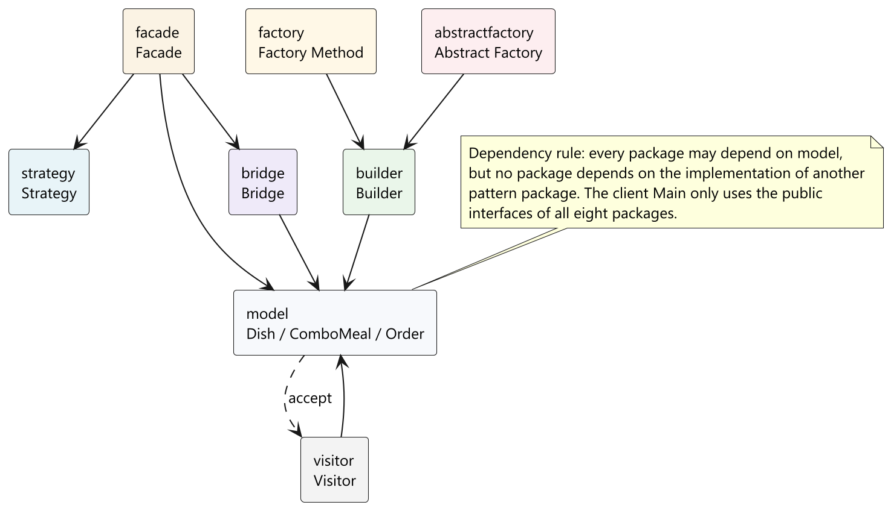

The detailed class diagrams of every pattern are Figures 2–9 in the body of the report. This appendix adds the view that is not visible in those figures: the dependency direction between the eight packages of the application.

accept().
The rule behind the diagram is simple and was respected in the code: a package may depend on model and on
the interfaces of another pattern, but never on the concrete implementation of another pattern. This is what allows the
classes of one pattern to be replaced without touching the others — for example a new
PricingStrategy is added without editing the facade.
A single diagram containing all 32 classes is also kept in the repository as
docs/uml/class-diagram.png (together with its PlantUML source). It is intended for A3 printing, because at
A4 width the class names would become too small to read; the seven per-pattern diagrams in the body are the readable
version of the same information.
The code below is the complete content of the src/main/java directory, grouped by package. The order is the
same as in the repository: the shared model first, then the creation patterns, the structural patterns, the behavioural
patterns and finally the client.
javac also works)// with Maven mvn clean package java -jar target/restaurant-system-1.0.0.jar // without Maven (plain JDK) javac -encoding UTF-8 -d out $(find src/main/java -name "*.java") java -cp out Main
java -jar plantuml.jar -tpng -charset UTF-8 docs/uml/*.puml
The source code is maintained in the repository github.com/CCE-Li/AITU-SDP-FinalExam on the
main branch. The work was committed pattern by pattern, so the history documents the order in which the
system was built:
| Commit | Message |
|---|---|
ef23b27 | chore: init project skeleton with model layer |
fb7bfcf | feat(factory): add Factory Method for dish creation |
0b26c4b | feat(builder): add Builder for custom combo meals |
9211289 | feat(abstractfactory): add Abstract Factory for meal families |
9597608 | feat(bridge): separate food type from dining mode |
93428ac | feat(strategy): add pricing strategies for different customers |
2ad4709 | feat(visitor): add calorie and report visitors |
a429019 | feat(facade): add OrderFacade with stock, payment, kitchen and notify |
542747f | feat(main): add client demo for all 7 patterns |